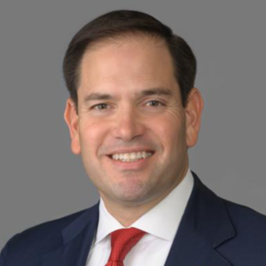
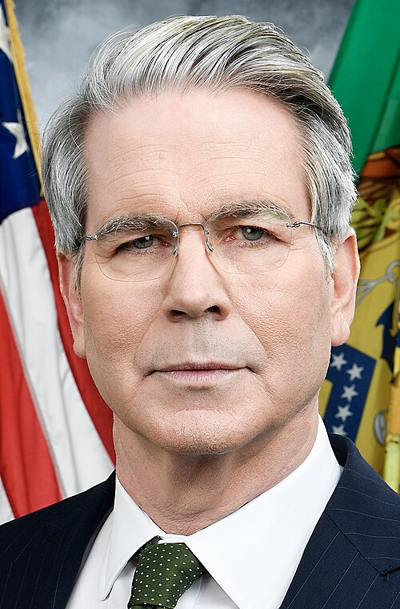

Trump Before and After the Midterms
In a Monday evening edition of the New York Post’s Pod Force One podcast, released the night before the election, Donald Trump issued some of his thoughts on the midterm elections.
Today, we’re going to take a close look at some highlights of this podcast to get a better sense of where Donald Trump’s mindset was before the Midterm elections and what we might expect moving forward.
https://www.youtube.com/watch?v=7YLDiUjYLOc
[ 6:25 - 9:11 ]
Donald spends some time here reflecting on the Dan S Sullivan fiasco in Alaska, which at the time was controversial, but at the time of writing this has gotten much more so. The race has the two legitimate candidates, Dan S Sullivan (R) and Mary Peltola (D) in the race by hundreds of votes, with the detractor Dan J Sullivan (D) obtaining thousands. This story is still developing; I expect it will come up a lot in the coming week as Trump and fellow Republicans will consider themselves vindicated on convictions of election corruption.
[ 13:36 - 16:00 ]
“Elon Musk has said that if the Democrats get a clean sweep, the House, the Senate, and then win the presidency in 2028, the country’s over.”
“Could be, I think he’s not wrong… I think it would be- maybe- forever destroyed.”
Donald then lists off what he claims the Democrats will do with this power: add 2 states (Puerto Rico and D.C.), stack the supreme court with 23 justices (instead of 13 justices, which nobody wants because 13 is an unlucky number), get rid of the second amendment, and “have transgender for everyone”.
Trump reaffirms his stance on vetoing future Democrat legislative efforts in the future.
[ 20:38 - 21:24 ]
Donald Trump affirms he’s ready to give preemptive pardons to members who could be threatened by the Democratic legislature, citing that Biden had done the same for his committee, and he has already done so for people involved in the January 6th event (1,586 pardons).
[ 24:45 - 25:09 ]
Host Miranda Devine asks who Trump thinks is the best-looking administration official, name dropping J.D. Vance, Marco Rubio, and Scott Bessent. Trump claims Marco Rubio is a hot politician, but claims they’re all good looking. Typical politician answer.


[ 25:37 - 25:46 ]
Miranda asks Trump what he’s going to be focusing on the next 2 years. Trump answers that right now, he’s focused on one thing- rallies and getting people elected. Short and sweet. Trump then spends some time gassing up his accomplishments.
[ 29:15 - 29:21 ]
Miranda asks Trump if we’ll see $2 gas again. “Oh, you’ll see less”.
The podcast ends shortly after this.
A day after this podcast dropped, a historic blue wave of voters elected Democrats across the country. Here’s the numbers as of the evening of November 4th:
54-44 blue to red in the Senate, a flip of 7 seats and a string of re-elections, 100 more Democrats than Republicans in the House of Representatives, 28 Democratic governors versus 20 Republicans.
The numbers are not looking good for the next several years for Trump and his Republican Party. So how’s Trump taking it?
Well, we don’t really know that much other than that he’s going to accept the results. In a non-press conference today, Trump spoke exclusively not of the midterms, but the construction of his new, beautiful ballroom. Trump’s X account? Silence. Trump’s Truth Social? Mostly uninvolved with election news, aside from posting a red cap with VETO in white text across it and dropping the following related posts within the span of the last 24 hours:
I wasn’t on the Ballot and if I was, we would have won IN A LANDSLIDE! Thank you for your attention to this matter. President DONALD J. TRUMP
If Greg Abbott, the Governor of Texas, hadn’t become a RINO in the last six months of his Political Life, he wouldn’t have lost. He went back to his original formula, and it wasn’t pretty! President DONALD J. TRUMP
Other posts include commentary on Bill De Blasio and stock market record highs.
As Donald Trump takes time to process his new America, we’ll be covering him here, listening him ramble for 30 minutes straight so you don’t have to, covering highlights not found anywhere else, with no distracting ads or paywalls.
Catrillionaire
Live Alaska Senate results: See Sullivan vs. Peltola latest
Live Alaska Senate results
As GOP points fingers over stunning midterm losses, Trump admires his ballroom - POLITICO